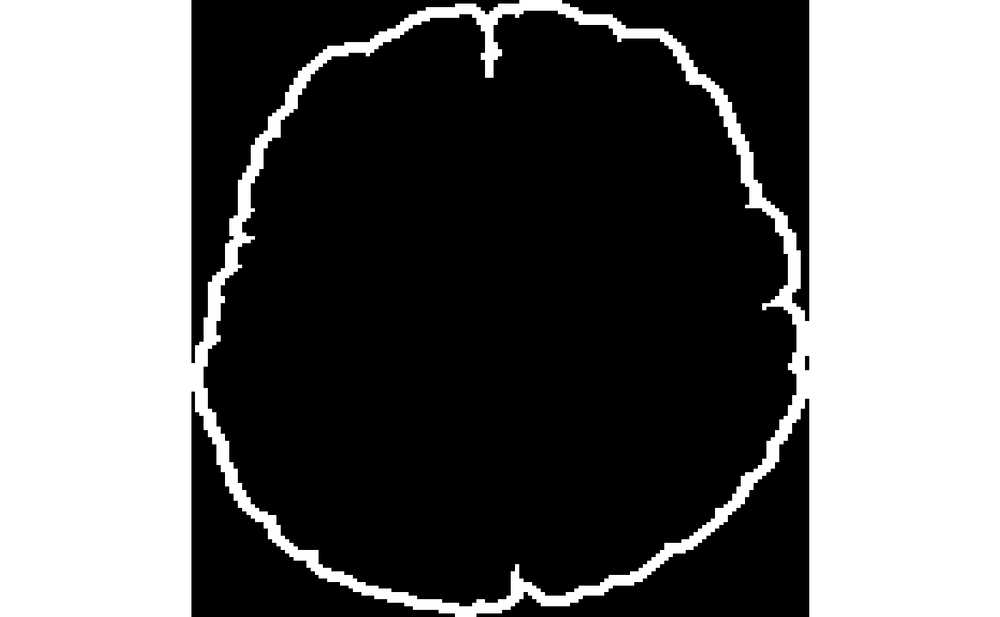

iMath (mathematical operations inside ANTsR)
Brian B. Avants, Arman Eshaghi, Jeffrey T. Duda
2019-05-06
iMath.RmdBasic operations
iMath wraps some functions of ImageMath from ANTs software. Basic arithmetics (e.g., add, subtract), are built into the antsImage class capabilities, and are similar to array operations in R:
fi <- antsImageRead(getANTsRData("r16"), 2)
sumfi <- fi + fi
mulfi <- fi * 2
#logarithm of image where non-zero
logfi <- log(fi[fi>0])
expfi <- exp(fi[fi>0])
divfi <- sumfi / mulfi##Morphological operations on masks and images
The typical rule for dilation and erosion of images in ANTsR is minimum for erosion and maximum for dilation (ITK rules).
-
Grayscale dilation of an image (compare it with binary dilation below):
#dilating by a radius of 3 voxels GDdilated <- iMath(fi,"GD", 3) #to see what dilation has done invisible(plot(GDdilated))
-
Grayscale erosion of an image (compare it with binary erosion below).

-
Morphological dilation works on binary images, where it makes white regions bigger:
mask <- getMask(fi) MD <- iMath(mask, "MD", 3) #to see the difference it made invisible(plot(MD - mask))
-
Morphological erosion makes white regions of a binary mask smaller.

-
Morphological closing of a binary image: operation
MCfill holes with the provided radius parameter, for example: Morphological opening of a binary image: removes small structures at the boundary or interior of an image. Syntax is similar to the previous procedure with the operation
MO.
##Padding or cropping an image
PadImage is a function to add/remove voxels to/from the boundaries of an image.
-
Positive numbers will pad image in each direction. So for example using 2 will increase an image with 256 voxels to 260.
padded <- iMath(fi, "PadImage", 2) #compare padded image dimensions with the original dimensions dim(fi) #> [1] 256 256 dim(padded) #> [1] 260 260-
Negative numbers will crop the image in each direciton. For example using -2 will convert a 2-dimensional image with 256 voxels in X and Y direction to 252 voxels in each dimension.
-
##Distance map Distance maps may be used for a number of purposes, including: shape analysis, skeletonization and path finding.
-
MaurerDistanceimplements ITK’s SignedMaurerDistanceMap which calculates the Euclidean distance transform of a binary image in time linear with total number of voxels (Maurer, Qi, and Raghavan 2003). It assumes that inside the binary image has negative distance, while outside of the binary mask has positive distance. -
Dimplements ITK’s DanielssonDistanceMap. It calculates the Euclidean distance map, which shows at each voxel the shortest distance to the nearest voxel in the background (assuming that the input is a binary image) (Danielsson 1980).
##Denoising with anisotropic diffusion
To reduce noise without changing important parts of an image in computer vision, Perona-Malik is a promising method. Perona-Malik method to reduce noise with anisotropic diffusion is accessible via PeronaMalik operation in iMath. It requires two parameters: 1) number of iterations, and 2) conductance. This implements ITK’s GradientAnisotropicDiffusionImageFilter.
The conductance parameter is described by ITK’s AnisotropicDiffusionFunction: “The conductance parameter controls the sensitivity of the conductance term in the basic anisotropic diffusion equation. It affects the conductance term in different ways depending on the particular variation on the basic equation. As a general rule, the lower the value, the more strongly the diffusion equation preserves image features (such as high gradients or curvature). A high value for conductance will cause the filter to diffuse image features more readily. Typical values range from 0.5 to 2.0 for data like the Visible Human color data, but the correct value for your application is wholly dependent on the results you want from a specific data set and the number or iterations you perform.”


Magnitude of gradient computation
Grad implements ITK’s GradientMagnitudeRecursiveGaussian which calculates the gradient of the magnitude of an image by convolution with the first derivative of a Gaussian. Parameters are:
sigma(Optional: double, default=0.5) is the full width at half max of the Gaussian kernel, specified in physical space units.normalize(Optional: 0 or 1 boolean, default=0) specifies if the output should be scaled to lie in [0,1]

Laplacian of Gaussian of an image
Laplacian implements ITK’s LaplacianRecursiveGaussianImageFilter which calculates the the Laplacian of Gaussian of an image by convolving with the second derivative of a Gaussian. Parameters are:
sigma(Optional: double, default=0.5) is the full width at half max of the Gaussian kernel, specified in physical space units.normalize(Optional: 0 or 1 boolean, default=0) specifies if the output should be scaled to lie in [0,1]

##Sequential operations on images
Usually it is easier to perform sequential procedures starting from left to right, instead of right to left, as one needs with functions. This has been made possible by another package that ANTsR depends on, magrittr. For example, instead of:
One can do:
require(magrittr)
#> Loading required package: magrittr
result <- fi %>% iMath("Laplacian",1) %>% iMath("GD",3)##Other operations
| Operation | Example | Description |
|---|---|---|
| FillHoles | img %>% iMath("FillHoles") |
Fills holes in binary object |
| GetLargestComponent | img %>% iMath("GetLargestComponent") |
Returns largest portion of binary object |
| Normalize | img %>% iMath("Normalize") |
Creates image negative |
| TruncateImageIntensity | img %>% iMath("TruncateImageIntensity", 0.05, 0.95) |
Trims intensities by quantiles |
| Sharpen | img %>% iMath("Sharpen") |
Makes edges sharper |
All iMath operations
| Operation | OperationType | Parameters | Example | Description | OutputDimensionalityChange |
|---|---|---|---|---|---|
| PadImage | Basic | positive or negative padvalue | iMath(i,op,5) | pads or de-pads image by n voxels on all sides | 0 |
| D | Filter | None | iMath(i,op) | distance transform | 0 |
| MaurerDistance | Filter | None | iMath(i,op) | distance transform | 0 |
| PeronaMalik | Filter | iterations, conductance | iMath(i,op,10,0.5) | perona malik edge preserving smoothing | 0 |
| Grad | Filter | sigma | iMath(i,op,1) | gradient magnitude | 0 |
| Laplacian | Filter | sigma | iMath(i,op,1) | laplacian of intensity | 0 |
| Canny | Filter | sigma | iMath(i,op,1,5,12) | canny edge detector | 0 |
| HistogramEqualization | Filter | alpha-beta-radius | iMath(i,op,alpha,beta,5) | adaptiveHistogramEqualizationImageFilter | 0 |
| MD | Morphology | element radius,value,shape,parametric/lines,thickness,includeCenter | iMath(i,op,1) | dilation | 0 |
| ME | Morphology | element radius,value,shape,parametric/lines,thickness,includeCenter | iMath(i,op,1) | erosion | 0 |
| MO | Morphology | element radius,value,shape,parametric/lines,thickness,includeCenter | iMath(i,op,1) | opening | 0 |
| MC | Morphology | element radius,value,shape,parametric/lines,thickness,includeCenter | iMath(i,op,1) | closing | 0 |
| GD | Morphology | element radius | iMath(i,op,1) | grayscale dilation | 0 |
| GE | Morphology | element radius | iMath(i,op,1) | grayscale erosion | 0 |
| GO | Morphology | element radius | iMath(i,op,1) | grayscale opening | 0 |
| GC | Morphology | element radius | iMath(i,op,1) | grayscale closing | 0 |
| FillHoles | LabelOp | None | iMath(i,op) | fills holes in binary object | 0 |
| FillHolesBinary | LabelOp | None | iMath(i,op) | fills holes in binary object | 0 |
| GetLargestComponent | LabelOp | None | iMath(i,op) | returns largest portion of binary object | 0 |
| LabelStats | LabelOp | roiImage | iMath(i,op,roiImg) | summarizes ROI values | NA |
| Normalize | Intensity | None | iMath(i,op) | normalize intensity into 0 1 range | 0 |
| TruncateIntensity | Intensity | lower and upper quantile | iMath(i,op,0.05,0.95) | trim intensities by quantiles | 0 |
| Sharpen | Intensity | None | iMath(i,op) | makes edges sharper | 0 |
| PropagateLabelsThroughMask | Filter | labelImage,stoppingValue,propagationMethod | iMath(mask,op,labels) | Propagates labels to labels all voxels in the mask | 0 |
References
Danielsson, P. 1980. “Euclidean Distance Mapping.” Computer Graphics and Image Processing 14: 227–48.
Maurer, C.R., R. Qi, and V. Raghavan. 2003. “A Linear Time Algorithm for Computing Exact Euclidean Distance Transforms of Binary Images in Arbitrary Dimensions.” PAMI 25 (2): 265–70. https://doi.org/10.1109/TPAMI.2003.1177156.